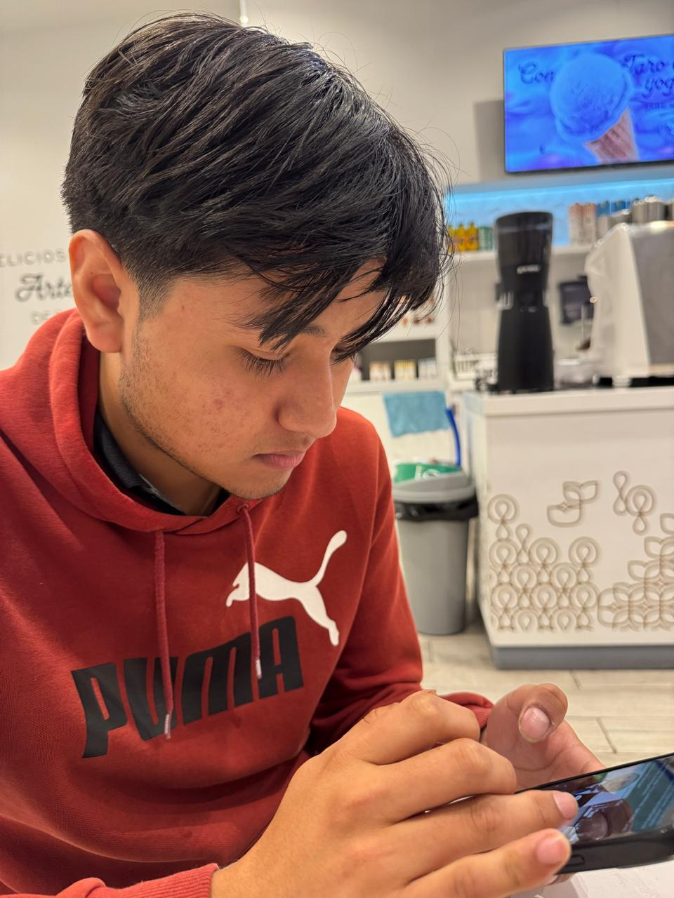

Lenguajes que manejo
Este portafolio muestra mi avance semestre a semestre: de mi primera pagina en HTML a aplicaciones con frontend en React, APIs en Python y algoritmos de grafos.
- HTML
- CSS
- JavaScript
- Python
- C++
- MySQL
Portafolio estudiantil
Aqui reuno los proyectos que he hecho a lo largo de la carrera: desde mis primeras paginas en HTML hasta una aplicacion con React y una API en Python que calcula rutas optimas sobre el mapa real de Tlaxcala.

Sobre mi
Soy Jonathan Hernandez Lazcano, estudiante de Ingenieria en Sistemas Computacionales en la Ibero Puebla. Me gustan los videojuegos, la tecnologia y los proyectos donde puedo probar algo nuevo.
Este portafolio muestra mi avance semestre a semestre: de mi primera pagina en HTML a aplicaciones con frontend en React, APIs en Python y algoritmos de grafos.
Videojuegos, Inteligencia Artificial, Tecnologia e Innovacion.
Trabajos
Formacion
Cursos y examenes que hice por fuera de las materias de la carrera.
Fuera del codigo
Lo que hago fuera de la computadora.
 Facebook
Facebook Instagram
Instagram WhatsApp
WhatsApp GitHub
GitHub YouTube
YouTube Stack Overflow
Stack Overflow